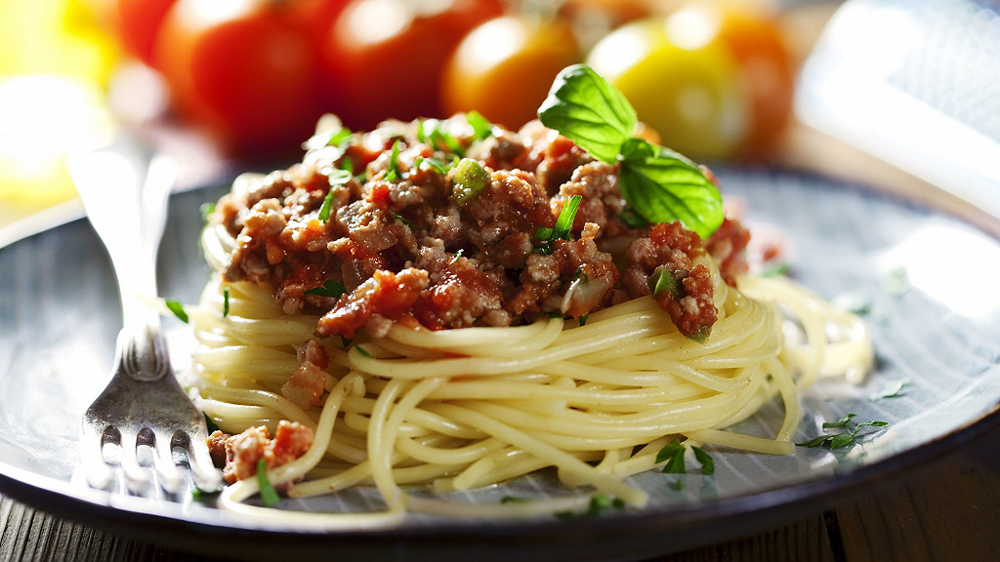

Spaghetti Bolognaise
Un classique italien qui fait toujours plaisir à tout le monde avec sa sauce mijotée bien gourmande.
Ingrédients :
- 400g de spaghetti
- 350g de viande hachée
- 1 oignon, 2 gousses d’ail
- 400g de tomates concassées
- 2 c.à.s de concentré de tomate
- Herbes de Provence, sel, poivre
- Parmesan râpé
Préparation :
- Faire revenir l’oignon et l’ail, ajouter la viande et faire dorer.
- Ajouter les tomates, le concentré, les herbes et laisser mijoter 30 min.
- Cuire les spaghetti, les égoutter puis servir avec la sauce.
- Parsemer de parmesan avant de déguster.
← Retour à l'accueil